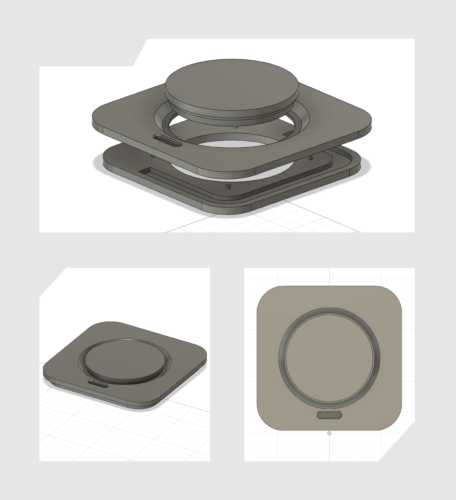
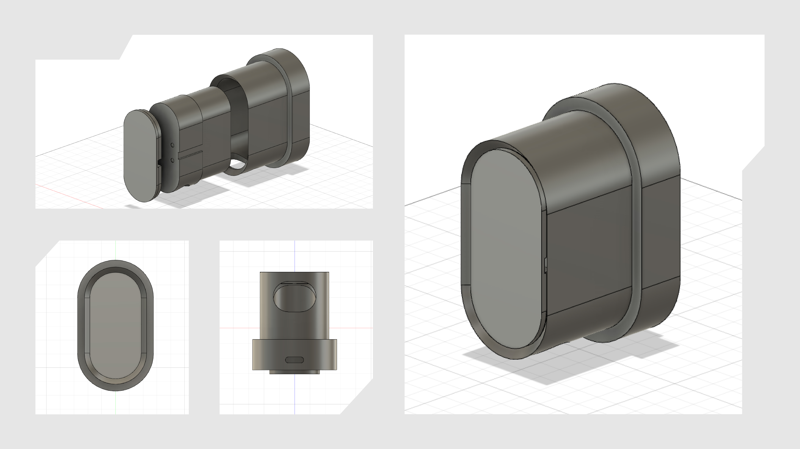

A smart food bowl powered by a Raspberry Pi running Linux. The device
will automatically dispense an appropriate amount of food throughout
the day using a NEMA17 steppper motor and a 3D printed auger
mechanism. Dual 128x32 OLED displays allow interaction with the user
and real-time food supply level monitoring via load sensors in the
base. All non-electronic parts will be 3D printed.
Components
Raspberry Pi Zero W
128x32 monochrome OLED (2)
Adafruit TCA9548A I2C Multiplexer
NEMA17 short body stepper motor
A4988 stepper motor driver
Power supply for both motor and RPi
Overture PLA – white
Overview
Originally, this project was meant to be a simple retrofit of my dogs'
(Kobe and Chile) current gravity-powered food bowl. I wanted to learn
more about programming hardware like displays and motors, and Kobe was
eating a little too much so we wanted to slow him down. The plan was to
add a Raspberry Pi 4+, a motor with a 3D-printed feed mechanism, and a
single display to their existing bowl.
As I gained experience in
Fusion360 and began to work on the electronics, however, I realized I
could do much more. I now believe the components list is final, and the
design of the device should only need some minor tweaks to some parts
before printing. This project is still a work in progress: as of right
now, the electronics and software drivers for the displays are finished;
the motor's software still needs some work; the feeder extrusion is
fully printed and temporarily assembled with its display inside; the
rest of the device still needs to be printed and assembled.
If
you have any questions or suggestions regarding this project, send me an
email!
Electronics
Why two displays? I wanted to have a display for interaction with the
user of the device, but with this device there are two distinct users
who need different types of interaction. The dogs are the obvious first
user: they'll use the bowl to eat. The second user is me, the human.
As a human, I'm interested in knowing how much food is in the supply
chamber and when I need to fill it. Dogs are only interested in eating.
The display at the top of the device shows humans the current
food level and indicates when to fill the chamber.
The display on
the front of the feeder extrusion plays a simple animation to draw the
attention of Kobe and Chile and notify them that food is about to come.
The wiring is not final and is for testing only. I'm using
all-black wires for the aesthetic, of course. It's reminiscient of
modern Mac internals.
I2C Multiplexer
In order to avoid I2C address conflict when controlling multiple
displays via I2C with the Raspberry Pi, one must use a multiplexer. The
TCA9548A from Adafruit has eight I2C channels, way more than enough for the
two I'll be using here.
Display 0 (human)
The video above shows the UI/animations for the human-facing display
(the bare OLED). I've written a python script to demonstrate the
functions of the display. First, you can see it cycle through food
levels 4 (full) through 1 (empty). Second, you can see the animation
intended to notify humans to fill the food supply chamber. Note: The
scanning effect is not visible in real life, I couldn't eliminate it in
video.
Display 1 (dogs)
This video shows the animations for the dog-facing display
(the OLED hidden inside the feeder extrusion). First, the display
creates a glowing effect by blasting all pixels at full brightness and
then turning down the brightness over a period of time, repeatedly.
Next, the display shows a "glowdrop" animation that I intend to
indicate food falling from the extrusion. The OLED has this rounded
pill shape by being masked with some black vinyl. I wish I had used
white, because the black is somewhat visible through the thin layer of
PLA that blurs the screen's output.
Software
You can check out all the code for this project over on
GitHub.
I'll be sharing a few snippets here that relate to the UI and animations
shown above.
glowing_alert
This is the function that creates the glowing alert effect to notify the
dogs of a meal.
In order to create a smoother glowing effect, it starts off at 0%
brightness and displays a series of bitmap images.
This slowly fills the screen with more white pixels and, once it's full,
the display scales brightness up to 100%. In effect, this extends the
range of display brightness.
The rest of the animations – the
glowdrop, the food levels, the empty food supply chamber alert – all
fuction the same as this. A loop displays a series of bitmap images to
create the animations.
Design
I intended the design of the device to be simple, user-friendly, and
modern. Many iterations led to the final design, and I think it both
looks good and provides a lot of function. The design is meant to
be modular so that each piece is small enough to fit on my printer's bed
and print in a reasonable amount of time.
The photos below show
the designs for the lid assembly and feeder extrusion (which you can
see printed above).

Lid Assembly
The lid assembly has a channel built into it to allow cable management
for the human-facing display.

Feeder Extrusion Assembly
Here, cable management is again designed into the parts surrounding the
display.
Work in Progress
This project is a work in progress! As such, this page will be updated
somewhat often and things about the project might change. Also, any
questions, tips, or suggestions are welcome. Feel free to send me an
email at my iCloud address (on my about page).